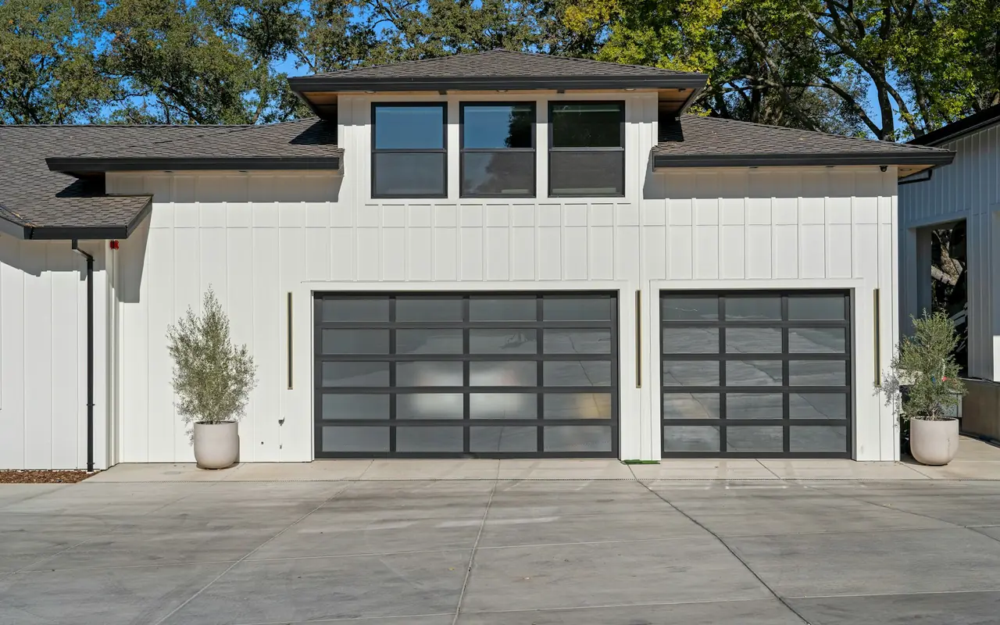

Nassau County Five Towns Specialists
Garage Door Repair & Installation Services
When a garage door breaks in Cedarhurst, Hewlett, Lawrence, Woodmere, or Inwood, you need fast, dependable, local service. At Five Towns Garage Door, we arrive same day with fully stocked service trucks, provide a transparent written estimate before touching anything, and back every repair with a written warranty.
- Open 24/7 · Holidays
- Same-Day Direct Dispatch
- Free Written Estimate
- Same-Day ServiceStocked trucks across the Five Towns
- Direct Local DispatchNo third-party call centers
- Free Written EstimateApproved before any work begins
- Written WarrantyOn parts and labor
Local Five Towns Technicians
Fast, Honest Garage Door Work in Nassau County
The Five Towns — Cedarhurst, Hewlett, Lawrence, Woodmere, and Inwood — feature some of the most established homes on Long Island's South Shore. Whether dealing with postwar colonials with fatigued original springs or custom estate properties with heavy carriage house doors, we understand the exact mechanics required for long-term safety.
When you call Five Towns Garage Door, you speak directly with a technician who knows the area. We arrive prepared with commercial and residential torsion springs, galvanized and stainless steel cables, heavy-duty nylon rollers, and genuine opener replacement parts from LiftMaster and Genie.
Every job starts with a free written estimate. The price quoted on-site is the final price on your invoice. No surprise fees, no hidden labor costs, and a comprehensive written warranty on parts and labor.
| Torsion Spring Replacement | $295 |
|---|---|
| Extension Spring Replacement | $145 |
| High-Cycle Spring Upgrade | $380 |
| Lifting Cable Replacement (Pair) | $125 |
| Coastal Stainless Steel Cables | $155 |
| Sealed Nylon Roller Upgrade | $35/roller |
| Track Realignment & Safety Reset | $175 |
| Opener Gear & Sprocket Rebuild | $130 |
| Safety Sensor Repair & Alignment | $75 – $150 |
| 22-Point Annual Safety Tune-Up | $99 |
| Written On-Site Estimate | FREE |
Starting prices; final price depends on door size and weight and is confirmed in your free written estimate before work begins.
Complete Services
What We Repair & Install Daily
Residential and commercial garage door service throughout the Five Towns — from a single snapped cable to a complete new door and opener.
Spring Replacement
- Torsion Springs
- Extension Springs
- High-Cycle Upgrades
- Spring Balance Checks
Cables & Hardware
- Snapped Cable Repair
- Stainless Coastal Cables
- Nylon Ball-Bearing Rollers
- Track Straightening
Opener Repair & Install
- LiftMaster Belt Drives
- Genie Screw Drives
- Wall-Mount Jackshafts
- Gear Kit Rebuilds
New Door Installation
- Carriage House Styles
- Insulated Steel R-12/18
- Contemporary Glass & Aluminum
- Custom Wood Overlays
Commercial Service
- Sectional Bay Doors
- Rolling Steel Coiling Doors
- Fire-Rated Door Tests
- Maintenance Contracts
Safety Inspection & Tune-Up
- Full 22-Point Safety Check
- Auto-Reverse Testing
- Sensor Laser Alignment
- Full Hardware Lube
Emergency Garage Door Repair
Door Stuck, Spring Snapped, or Car Trapped Inside?
Garage doors break on their own schedule. We handle emergency calls same day — evenings, weekends, and holidays included — across all five communities.
- Broken torsion or extension spring
- Snapped or frayed lifting cable
- Door off track or hanging crooked
- Opener hums but the door won't move
- Door won't close — sensors blinking
- Door stuck open overnight
If a spring or cable just broke
Stop — do not run the opener. A garage door with a broken spring becomes deadweight (150–300+ lbs). Attempting to run the opener will strip internal drive gears or burn the motor, and the door can fall without warning.
Keep people and pets clear of the opening, leave the door where it is, and call us for same-day spring and cable replacement.
Why Five Towns Garage Door
Local Technicians. Straight Answers. Work Done Right the First Visit.
You Reach a Technician
We dispatch directly — no third-party call centers. The person on the phone listens to your symptoms and identifies the likely failure before the truck rolls.
Fully Stocked Trucks
Torsion springs in the sizes common to Five Towns homes, galvanized and stainless cables, nylon rollers, and LiftMaster and Genie opener parts — so most repairs finish in a single visit.
The Quote Is the Price
You review and approve a free written estimate before any work begins. The price quoted on-site is the final price on your invoice — no surprise fees.
Coastal Know-How
Reynolds Channel, Jamaica Bay, and South Shore salt air are hard on steel. We recommend galvanized and marine-grade stainless hardware where it makes a real difference.
Safety-Tested Every Time
Every repair ends with full auto-reverse and balance safety tests, and you receive written warranty documentation for the work.
Evenings, Weekends & Holidays
Full emergency and scheduled service around the clock across Cedarhurst, Hewlett, Lawrence, Woodmere, and Inwood.
Google Reviews
What Customers Say
4.7 out of 5 stars from 15 Google reviews (as of September 2026). Reviews are quoted as written.
Both of my cars were stuck in the garage and I called at 8 AM expecting someone to not be able to get there until late or the next day. A service technician showed up within an hour after I had called. He was very professional and explained everything in depth. Without the typical pushy attitude, he fixed my garage door at an affordable price. I would definitely recommend Five Towns Garage Doors in Nassau County. Thank you.
The spring of my garage broke late at night. I called first thing the next morning and someone came within a couple hours and quickly fixed it. They were great! I would highly recommend this Nassau County garage doors repair company to anyone.
It was a great experience from start to finish. Sales rep helped us choose the door, and it turned out great. The young man who installed it did a great job. He was very pleasant and professional. Five Towns Garage Doors has my highest recommendations.
The garage door repair technician was friendly and helpful and he was there to fix my door not to just sell me a bunch of parts. He is the reason I would have this company back to my house. The scheduling was easy and the people were pleasant on the phone.
Having an issue with our external keypad/remote caused us to contact Five Towns Garage Doors. The company helped us contact the manufacturer for technical assistance instead of just charging us for a service call, saving us time and money. If we ever need garage door repair again, we will definitely use them.
Just purchased a new garage door & opener for our home from one of their many styles of garage door for sale. From the first phone call to the installation everything has been smooth and easy I love the way it turned out! The new door updated our garage and now we can open and close the door with our phone, which is helpful! The best place on Long Island for garage doors near me.
My opener's lift chain completely derailed from the gear assembly, leaving our SUV totally trapped inside the bay. The tech arrived with all the correct replacement garage door parts right inside his work vehicle to fix the mechanism. He re-aligned the motor assembly and completed the entire garage door repair so we could finally get out of the house.
The technician did a great job to fix my garage door ! I appreciate his recommendation to replace the one coil and to replace the cable too. he was effcient and fast, and polite. I was hesitant at first because of the additional cost, but he spoke to me safert issues are first! Thank you for a job well done !
I live in Oceanside, and I was in the market for a new garage door. I shopped around and came across Five Towns Garage Doors. Not only did they give me a good deal, but they were prompt, professional and extremely helpful. They showed up when they said they would and did a great job. If anyone is looking for a garage door, do not hesitate, call Five Towns Garage Doors!
The repair guy came on time and he removed my old damaged garage door and replaced it with the new door quickly. He showed me what was different from the new garage doors for sale and the old door and explained why the parts were better than my old one. Highly recommended.
The old rollers on my tracking rails were making an absolute racket every single time I backed my sedan out. This local garage door company checked the balance and found out the tracking setup was completely warped. They replaced the warped steel rails and applied proper lube to the bearings during the garage door maintenance visit. Everything rolls open quietly now without that awful metal-on-metal scraping noise.
I called several garage door companies for an emergency repair they all promised same day service but no one showed up. I finally called Five Town Garage doors and they showed up in 1 and a half hours did the repair cleaned up and left. FANTASTIC AND SINCERE POLITE PROFDESSINALS. Rebbeca at the call center called me several times to make sure they were on time and clean.
I needed to find a reliable garage door supplier to look at our dented storefront entry gate. They helped me pick out heavy-duty commercial garage doors that handle constant daily use without jamming up. It was a completely straightforward experience getting this sorted out in Cedarhurst, NY.
Great company. Called back immediately and showed up on time. What more can you ask for!!!
How It Works
Our 4-Step Service Process
Direct Call & Over-Phone Diagnosis
Call (516) 490-0931. A technician listens to your symptoms, identifies the likely failure, and dispatches a stocked truck immediately.
Rapid Same-Day Arrival
We arrive within 2–4 hours across Cedarhurst, Hewlett, Lawrence, Woodmere, and Inwood, with a 30-minute advance heads-up call.
Free Written Estimate
We inspect the entire physical door and opener system. You review and approve the written estimate before any work begins.
Single-Visit Repair & Warranty
We complete the repair, conduct full auto-reversal and balance safety tests, and provide your written warranty documentation.
Our Local Coverage
Serving Every Five Towns Community
Each community has its own housing stock and its own garage door challenges. Choose your town for local pricing, common problems, and answers from homeowners nearby — or see the full Five Towns service area.
Garage Door Openers
LiftMaster & Genie Opener Service
Stripped gears, blinking safety sensors, dead logic boards, lost remotes — diagnosed and repaired the same day. Upgrading? We install belt drive, chain drive, screw drive, and wall-mount openers with smart Wi-Fi control and battery backup.
Quiet belt drives for attached garages, wall-mount jackshaft openers for high or obstructed ceilings, MyQ smart control, and battery backup for South Shore storm outages.
LiftMaster opener serviceMachForce screw drive and StealthDrive belt drive openers, Aladdin Connect smart control, and Safe-T-Beam sensor diagnostics and repair.
Genie opener serviceNot sure which opener fits your home? Compare belt, chain, and wall-mount drives, smart features, and battery backup — then we'll recommend the right match.
Compare garage door openersCommon Inquiries
Five Towns Garage Door FAQ
Direct answers to the most frequent questions from local homeowners throughout Nassau County.
Who repairs garage doors in the Five Towns NY?
Five Towns Garage Door provides same-day garage door repair throughout Cedarhurst, Hewlett, Lawrence, Woodmere, and Inwood NY. We dispatch directly without third-party call centers and typically arrive within 2–4 hours. Call (516) 490-0931 any time, including evenings and weekends.
My garage door spring broke — can I still open the door?
No — stop immediately. A garage door with a broken spring becomes deadweight (150–300+ lbs). Attempting to run the opener will strip internal drive gears or burn the motor. Call (516) 490-0931 for same-day spring replacement.
How much does garage door spring repair cost in the Five Towns?
Extension spring repair starts from $145. Torsion spring replacement starts from $295, depending on door weight and size. Free written estimate before any work begins. Call (516) 490-0931.
Why do cables and springs corrode faster in Lawrence and Inwood?
Proximity to Reynolds Channel, Jamaica Bay, and the Atlantic South Shore exposes hardware to concentrated coastal salt air, and Lawrence and Inwood are the most directly exposed. Moisture and salt accelerate steel oxidation. We install marine-grade 316 stainless steel cables and galvanized, zinc-coated springs for waterfront durability.
Do you repair garage doors on evenings and weekends in the Five Towns?
Yes — Five Towns Garage Door provides full emergency and scheduled service evenings, weekends, and holidays across all Five Towns communities. Emergency calls are handled same-day without delay. Call (516) 490-0931.
Garage Door Issues in the Five Towns?
Same-day repairs across Cedarhurst, Hewlett, Lawrence, Woodmere, and Inwood. Free written estimates and written warranties on every job.